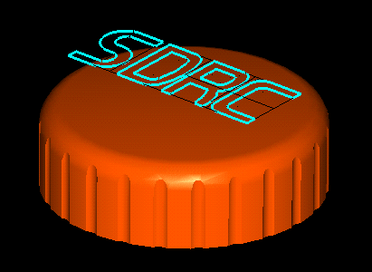
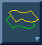
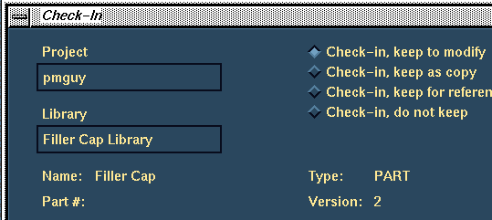

Page 6 of 7
Next Page
Previous Page
First Page
User 1

Get the Filler Cap Logo part to the workbench.
User 1
Extrude RMB Split
the logo section to split just the top surface of the Filler Cap.
User 1

Use the
Offset Surface
icon to create a raised logo,
Offset 1mm
DO NO KEEP the original
Create Side surfaces.
User 1

Check-in, Keep to Modify
the Filler Cap as version 2.
Next Page